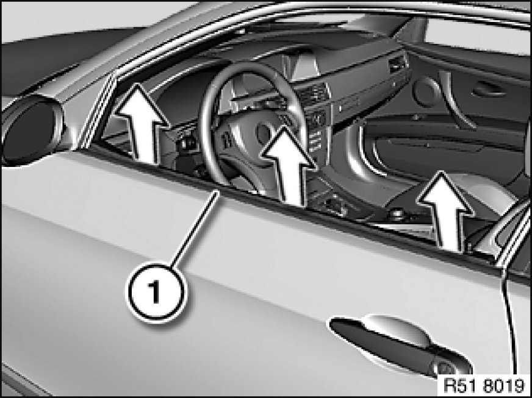
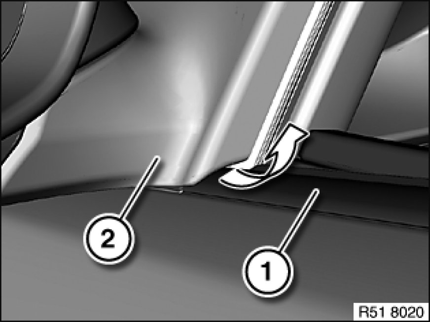
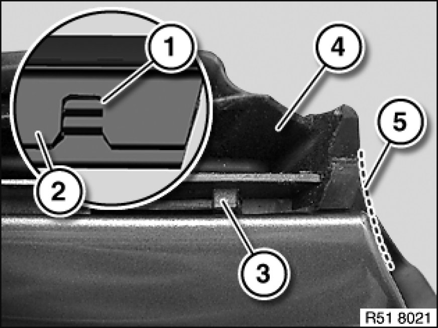

51 21 300 Removing and Installing/Replacing Window Cavity Cover Strip on Outside of Left or Right Front Door
51 21 300 - Removing and installing or replacing window cavity cover strip on outside of left or right front door

Special tools required:

Important!
Observe procedure 51 21 ... Removing Window Cavity Cover Strip With Special Tool 00 9 324 at Front or Rear for using special tool 00 9 324.
The "Instructions on fitting window guides" serve as the basis for this repair instruction and must be observed without fail.

Important!
Risk of damage!
If reusing the existing window cavity cover strip (1), make sure it is not bent.
Lever out window cavity cover strip (1) with special tool 00 9 324 (starting at B-pillar).

Pull window cavity cover strip (1) out of door mirror (2) in direction of arrow.
Installation Note:
Moisten window cavity cover strip (1) prior to fitting with approved anti-friction agent.

E92/E93 only:
Installation Note:
Notch (1) on window cavity cover strip (2) must be correctly located in guide (3) of cover strip (4).
Window cavity cover strip (2) must be flush at rear to door edge (5).
If cover strip (4) is not correctly fitted, window cavity cover strip (2) cannot be fitted flush with door edge (5).
If necessary, align cover strip (4).